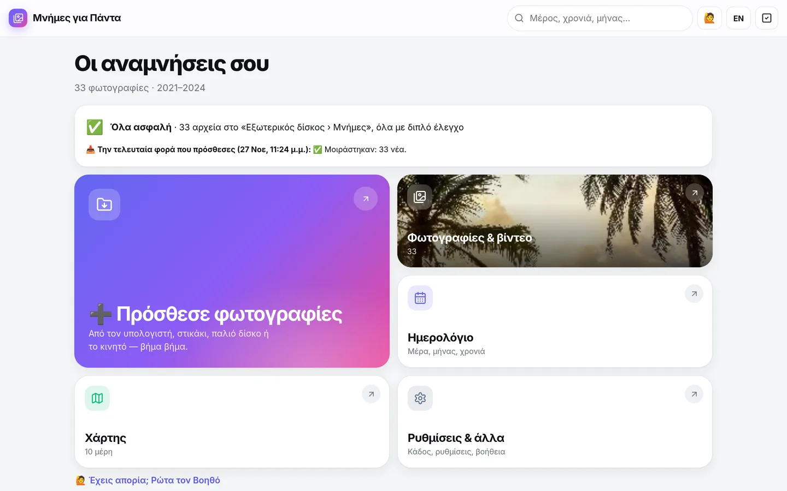
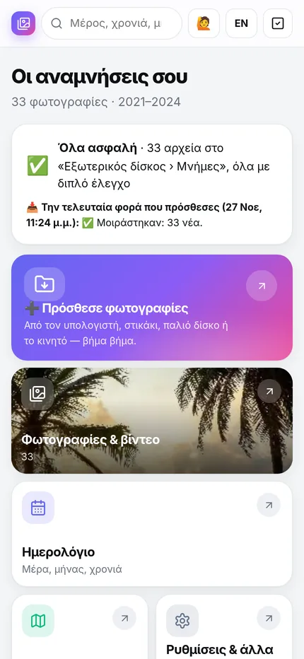
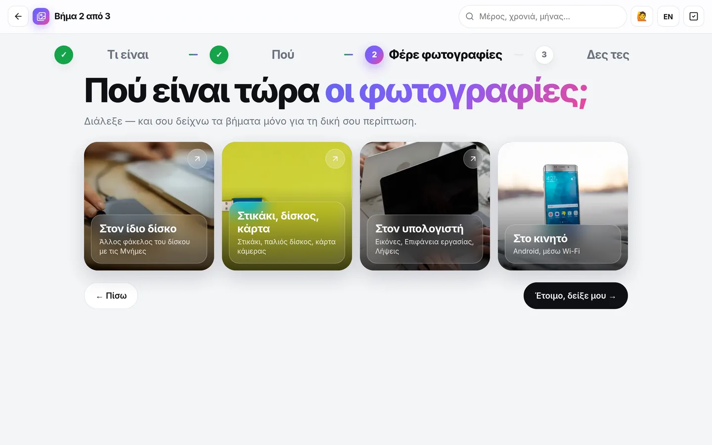
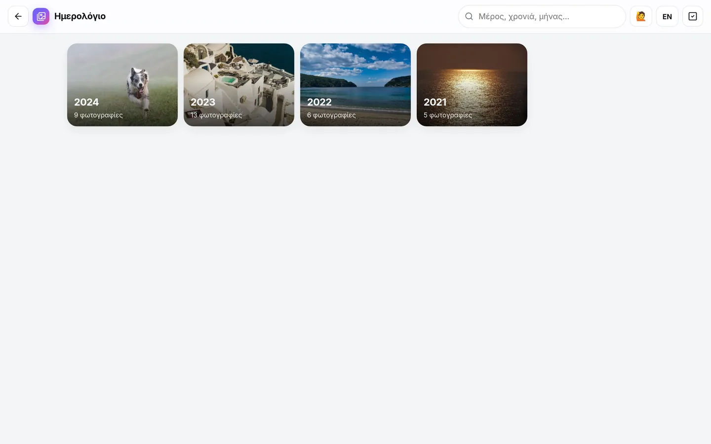
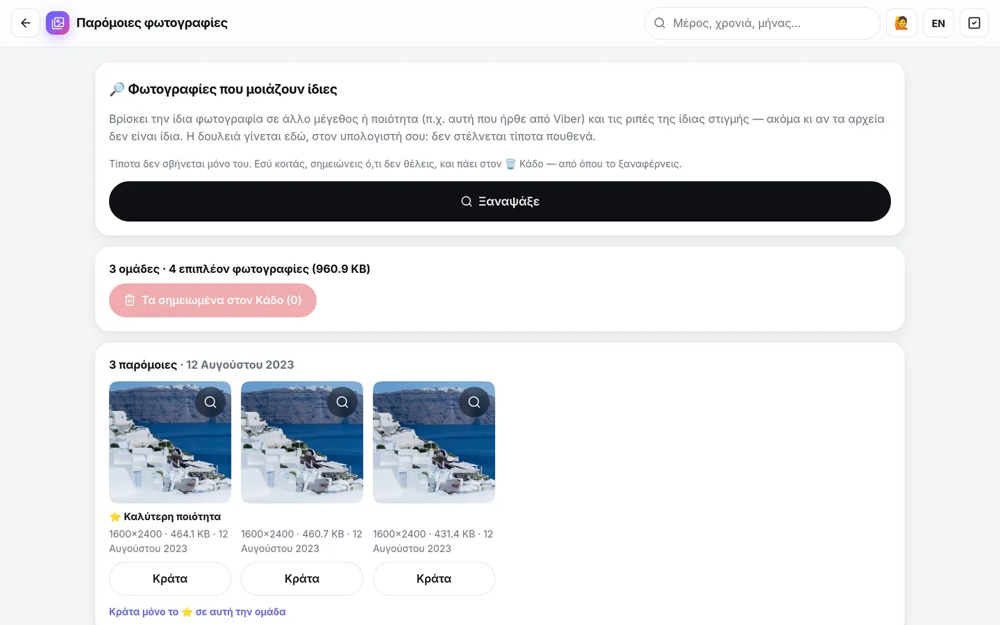

Ρίχνεις όλες τις φωτογραφίες και τα βίντεό σου σε έναν φάκελο, και μπαίνουν μόνα τους σε σειρά ανά χρονιά, μήνα και μέρος. Με ημερολόγιο και χάρτη. Δωρεάν, χωρίς λογαριασμό, και τίποτα δεν ανεβαίνει στο ίντερνετ.
Ένα αρχείο · Windows, Mac, Linux · Ελληνικά & Αγγλικά. Το «online» δουλεύει και σε iPhone, για προβολή.
Τίποτα δεν ανεβαίνει
Τριπλός έλεγχος
Δωρεάν για πάντα


Δες την από μέσα
Η εφαρμογή, όπως θα τη δεις
Η αρχική: πόσες φωτογραφίες έχεις, αν είναι όλες ασφαλείς, και τα 5 κουμπιά που χρειάζεσαι.
Οι φωτογραφίες είναι παραδείγματα (Pexels, δωρεάν άδεια). Η εφαρμογή είναι η πραγματική, έκδοση 3.2.
Πώς δουλεύει
Κατέβασέ το και άνοιξέ το με Chrome ή Edge
Διπλό κλικ στο «Mnimes.html». Δεν χρειάζεται εγκατάσταση. (Αν ανοίξει άλλος browser: δεξί κλικ → Άνοιγμα με → Chrome.)
Διάλεξε τον δίσκο
π.χ. τον εξωτερικό. Φτιάχνεται ο φάκελος «Μνήμες» με τον φάκελο «Ρίξ' τα όλα εδώ» μέσα, και οι Μνήμες μπαίνουν κι αυτές πάνω στον δίσκο.
Ρίξ' τα όλα εκεί
Με την Εξερεύνηση αρχείων, όπως πάντα: από κινητό, στικάκι, παλιό δίσκο. Μοιράζονται μόνα τους σε Χρονιά/Μήνα/Μέρος, με διπλό έλεγχο.
Τι κάνει
Μία βιβλιοθήκη για όλη σου τη ζωή
Ρίξ' τα όλα εδώ
Ένας φάκελος για όλα. Ό,τι ρίχνεις μπαίνει μόνο του σε Χρονιά / Μήνα / Μέρος, με διπλό έλεγχο. Δεν πατάς τίποτα άλλο.
Ρίξ' τα όλα εδώ→2023›08-Αύγουστος›Νάξος
Ημερολόγιο & χάρτης
Βρες κάθε στιγμή: πότε και πού τραβήχτηκε.
Νέο
Παρόμοιες φωτογραφίες
Βρίσκει την ίδια φωτογραφία σε άλλο μέγεθος (π.χ. από Viber) και τις ριπές της ίδιας στιγμής. Σου δείχνει την καλύτερη με ⭐ και διαλέγεις εσύ.
Διπλότυπα
Βρίσκει μόνο τα 100% ίδια, κρατάει πάντα ένα, και τα άλλα πάνε σε κάδο. Δεν σβήνεται τίποτα χωρίς εσένα.
IMG_2041.jpgμένει
IMG_2041 (1).jpgστον κάδο
Αντίγραφο IMG_2041.jpgστον κάδο
Από το κινητό
Και χωρίς καλώδιο, με την εφαρμογή Android μέσω Wi-Fi. Αυθεντικές, με την τοποθεσία τους.
Πάνω στον δίσκο
Οι Μνήμες ζουν μέσα στον δίσκο: τον συνδέεις σε όποιον υπολογιστή και είναι πάντα η σωστή βιβλιοθήκη.
Πάντα σε συμφωνία
Δύο υπολογιστές με τον ίδιο δίσκο δεν χαλάνε ο ένας τον άλλον. Ό,τι αλλάξεις με το χέρι διορθώνεται με ένα κουμπί.
Πώς το κάνει
Τι γίνεται «από μέσα», με απλά λόγια
Όλα μένουν σε σένα
Οι Μνήμες είναι ένα αρχείο που τρέχει μέσα στον Chrome ή στον Edge και γράφει απευθείας στον δίσκο σου, με την άδειά σου. Δεν υπάρχει server, λογαριασμός ή «σύννεφο»: οι φωτογραφίες δεν περνάνε ποτέ από το ίντερνετ.
IMG_2041.jpg
…
Ψηφιακό αποτύπωμα (SHA-256)
Από κάθε αρχείο βγαίνει ένας «κωδικός» 64 χαρακτήρων. Αν αλλάξει έστω ένα byte, ο κωδικός αλλάζει εντελώς (δοκίμασέ το, ζωντανά). Έτσι ελέγχεται κάθε αντίγραφο τρεις φορές.
Οπτικό αποτύπωμα (για τις Παρόμοιες)
Η φωτογραφία μικραίνει σε 9×8 γκρι κουκκίδες, και για κάθε ζευγάρι γειτονικών γράφεται 1 αν η δεύτερη είναι πιο φωτεινή. Βγαίνουν 64 «ναι/όχι». Η ίδια φωτογραφία από Viber διαφέρει σε 2 από τα 64, άρα είναι η ίδια. Ένα άλλο ηλιοβασίλεμα διαφέρει σε 7 και είναι άλλη μέρα, άρα μένει χωριστά.
Βοηθός στο παρασκήνιο
Τα μεγάλα βίντεο τα ελέγχει ένας «βοηθός» (Web Worker) δίπλα στη σελίδα, οπότε η οθόνη απαντάει πάντα αμέσως. Σε αργό υπολογιστή δουλεύει πιο ήπια, για να μη ζεσταθεί.
Γρήγορο
Γρήγορο ακόμα και σε παλιό υπολογιστή
Η δουλειά γίνεται από βοηθό στο παρασκήνιο, οπότε η σελίδα δεν «κολλάει» ποτέ, ακόμα και με βίντεο πολλών GB.
0,55δευτ.το μεγαλύτερο «πάγωμα» της σελίδας με τεράστια βίντεο (ήταν 4,7 δευτ.)
4δευτ.για να δει μόνο του τα καινούργια αρχεία που έριξες (ήταν 25 δευτ.)
0,04δευτ.για να ξαναβρεί τις παρόμοιες ανάμεσα σε 841 φωτογραφίες (την πρώτη φορά 5,5 δευτ.)
Μετρημένο με αληθινές φωτογραφίες σε laptop του 2012, με παλιό σκληρό δίσκο.
Ασφάλεια
Φτιαγμένο για να μη χαθεί τίποτα
Κάθε φωτογραφία περνάει από αυτά τα βήματα. Αν κάτι δεν ταιριάζει έστω και κατά ένα byte, σταματάει και δεν σβήνει τίποτα.
ΑντιγραφήΊδια ανάλυση, ίδια ποιότητα, καμία συμπίεση.
2ος έλεγχοςΣτο τέλος ξαναδιαβάζεται και συγκρίνεται.
3ος έλεγχοςΠριν από κάθε σβήσιμο, ξανά.
ΚάδοςΌ,τι σβήνεις πάει πρώτα εκεί και επανέρχεται.
Τα αρχικά σβήνονται μόνο αν το ζητήσεις, και μόνο αφού επαληθευτούν τα αντίγραφα.
Διπλότυπα και χαλασμένοι δίσκοι. Ό,τι υπάρχει ήδη δεν μπαίνει δεύτερη φορά. Αν ένας δίσκος βγάζει σφάλματα, σταματάει.
Ιδιωτικό. Οι φωτογραφίες δεν φεύγουν από τον υπολογιστή σου. Δεν υπάρχει λογαριασμός, ούτε διαφημίσεις.
Κανονικά αρχεία. Οι φωτογραφίες μένουν απλά αρχεία σε φακέλους: ανοίγουν και χωρίς τις Μνήμες, για πάντα.
Οδηγός
Βήμα βήμα, για όλα
Πάτα ένα θέμα για να ανοίξει. Τα ίδια θα τα βρεις και μέσα στην εφαρμογή, στον «🙋 Βοηθό».
Η πρώτη φορά
Πάτα «Κατέβασε τις Μνήμες για Πάντα» εδώ πάνω. Κατεβαίνει ένα αρχείο, το «Mnimes.html».
Άνοιξέ το με διπλό κλικ. Πρέπει να ανοίξει σε Chrome ή Edge. Αν ανοίξει άλλος browser: δεξί κλικ → «Άνοιγμα με» → Chrome.
Σύνδεσε τον δίσκο όπου θέλεις να ζουν οι φωτογραφίες σου (π.χ. έναν εξωτερικό δίσκο).
Πάτα «➕ Πρόσθεσε φωτογραφίες» και διάλεξε τον δίσκο. Όταν ο Chrome ρωτήσει, πάτα «Να επιτρέπεται σε κάθε επίσκεψη».
Στην ερώτηση «Να μπουν οι Μνήμες και πάνω στον δίσκο;» πάτα ΟΚ. Έτσι τις ανοίγεις από τον δίσκο σε όποιον υπολογιστή.

💡 Φτιάχνεται ο φάκελος «Μνήμες» και μέσα του ο φάκελος «Ρίξ' τα όλα εδώ». Αυτό ήταν.
Βάζω φωτογραφίες από στικάκι ή παλιό δίσκο
Σύνδεσε το στικάκι ή τον παλιό δίσκο.
Άνοιξε την Εξερεύνηση αρχείων και βρες τις φωτογραφίες.
Αντίγραψέ τες (ή ολόκληρους φακέλους) μέσα στο «Μνήμες › Ρίξ' τα όλα εδώ».
Με τις Μνήμες ανοιχτές, το βλέπουν μόνες τους μέσα σε λίγα δευτερόλεπτα και τα μοιράζουν σε Χρονιά / Μήνα / Μέρος.
Η μπάρα δείχνει πόσο μένει. Αν το κλείσεις, συνεχίζει από εκεί που έμεινε.
💡 Έγγραφα και ό,τι δεν είναι φωτογραφία ή βίντεο μένουν ανέγγιχτα. Για παλιό ή ύποπτο δίσκο: «Ρυθμίσεις & άλλα» → «Για ειδικούς» → «Πάρε & μοίρασε» (αντιγράφει και δεν πειράζει τα αρχικά).
Φέρνω τις φωτογραφίες του κινητού
Χωρίς καλώδιο (Android): κατέβασε την εφαρμογή «Μνήμες για Πάντα» από αυτή τη σελίδα. Κινητό και υπολογιστής στο ίδιο Wi-Fi.
Στον υπολογιστή: «➕ Πρόσθεσε φωτογραφίες» → «📱 Δείξε το QR» → Android.
Στο κινητό: «💻 Στείλ' τες στον υπολογιστή» και σκάναρε το QR. Έρχονται αυθεντικές, με την τοποθεσία τους.
Με καλώδιο (Android): στο κινητό πάτα την ειδοποίηση «USB» → «Μεταφορά αρχείων». Στον υπολογιστή αντίγραψε τον φάκελο DCIM μέσα στο «Ρίξ' τα όλα εδώ».
iPhone: μία φορά, Ρυθμίσεις → Φωτογραφίες → «Μεταφορά σε Mac ή PC» → «Διατήρηση αυθεντικών». Μετά καλώδιο, «Εμπιστεύομαι», και αντιγραφή του DCIM.
💡 Πριν σβήσεις οτιδήποτε από το κινητό, κάνε τον έλεγχο «✔ Είναι όλες στον υπολογιστή;» στην εφαρμογή. Αν το κινητό κρατάει αντίγραφο στο cloud, το σβήσιμο από το κινητό τις σβήνει και από εκεί.
Βρίσκω μια φωτογραφία
Ημερολόγιο: διάλεξε χρονιά και μήνα, και δες τις μέρες με φωτογραφίες.
Χάρτης: δες πού τραβήχτηκαν. Μπαίνουν όσες έχουν τοποθεσία (GPS) μέσα τους.
Αναζήτηση πάνω: γράψε μέρος (Νάξος), χρονιά (2019) ή μήνα (Αύγουστος 2023).
Πάτα μια φωτογραφία για να ανοίξει μεγάλη. Με τα βελάκια πας στην επόμενη.

💡 Οι φωτογραφίες είναι και κανονικά αρχεία στον φάκελο «Μνήμες › Χρονιά › Μήνας › Μέρος»: ανοίγουν και χωρίς τις Μνήμες.
Πάτα «Βρες παρόμοιες φωτογραφίες». Την πρώτη φορά θέλει λίγα λεπτά για πολλές χιλιάδες, μετά είναι στιγμιαίο.
Σε κάθε ομάδα, η φωτογραφία με το ⭐ είναι αυτή με την καλύτερη ποιότητα. Με τον φακό τη βλέπεις μεγάλη.
Πάτα «Κράτα / Στον Κάδο» σε όποια θέλεις, ή «Κράτα μόνο το ⭐» για όλη την ομάδα.
Στο τέλος πάτα «Τα σημειωμένα στον Κάδο».

💡 Τίποτα δεν σβήνεται μόνο του, και ό,τι πάει στον Κάδο επανέρχεται.
Σβήνω και επαναφέρω
Άνοιξε τη φωτογραφία και πάτα το 🗑️. Για πολλές μαζί: το κουμπί επιλογής πάνω δεξιά.
Πάει στον Κάδο, μαζί με τα αρχικά της. Πρώτα επαληθεύεται το αντίγραφο στον Κάδο.
Για επαναφορά: «⚙️ Ρυθμίσεις & άλλα» → «Κάδος» → «Επαναφορά».
Οριστικά χάνεται μόνο με «Άδειασμα Κάδου».
Κάνω 2ο αντίγραφο ασφαλείας
Σύνδεσε άλλον δίσκο ή στικάκι.
«⚙️ Ρυθμίσεις & άλλα» → «Ρυθμίσεις» → «💾 2ο αντίγραφο σε ΑΛΛΟΝ δίσκο», και διάλεξέ τον.
Γεμίζει μόνο του και μένει πάντα ενημερωμένο.
💡 Είναι το πιο σημαντικό απ' όλα: αν χαλάσει ένας δίσκος, οι φωτογραφίες σώζονται από τον άλλον.
Σε άλλον υπολογιστή
Σύνδεσε τον δίσκο στον άλλον υπολογιστή.
Άνοιξε το αρχείο «Μνήμες › Μνήμες για Πάντα.html» πάνω στον δίσκο, με Chrome ή Edge.
Την πρώτη φορά πάτα «Διάλεξε τον φάκελο Μνήμες αυτού του δίσκου». Μετά όλα φορτώνουν μόνα τους.
💡 Δύο υπολογιστές με τον ίδιο δίσκο δεν χαλάνε ο ένας τον άλλον: οι λίστες ενώνονται.
Κάτι δεν πάει καλά
Δεν μοιράζονται; Αν πάνω γράφει «🔓 … ζητά ξανά άδεια», πάτα το κουμπί και διάλεξε «Να επιτρέπεται σε κάθε επίσκεψη».
Μαύρα κουτάκια ή λείπουν φωτογραφίες; «Ρυθμίσεις & άλλα» → «Για ειδικούς» → «Ξανακοίτα τη βιβλιοθήκη».
«Ήδη ανοιχτές σε άλλη καρτέλα»; Κλείσε τη δεύτερη καρτέλα. Οι Μνήμες δουλεύουν σε μία κάθε φορά.
Ο δίσκος βγάζει σφάλματα; Πάτα «⛔ Σταμάτα». Για πολύτιμες φωτογραφίες, πήγαινε τον δίσκο σε εργαστήριο ανάκτησης δεδομένων.
Λάθος ημερομηνία; Βγαίνει από μέσα από τη φωτογραφία ή από το όνομά της. Αν η κάμερα είχε λάθος ώρα, μπαίνει με αυτήν.
Βοηθός
Έχεις απορία;
Ο ίδιος Βοηθός που έχει η εφαρμογή: διαλέγεις ερώτηση και βλέπεις την απάντηση βήμα βήμα. Χωρίς λογαριασμό, χωρίς να στέλνεται τίποτα.
Τι χρειάζεται
Υπολογιστής
Chrome ή Edge (νέα έκδοση): κάνει τα πάντα, δηλαδή μάζεμα, ταξινόμηση, έλεγχο και σβήσιμο.
Safari, iPhone, Firefox
Μόνο προβολή: ημερολόγιο και χάρτης για όσες φωτογραφίες διαλέξεις. Δεν μπορούν να γράψουν σε φακέλους.
Ίντερνετ
Για τον χάρτη, τα ονόματα των μερών και τις ημερομηνίες λήψης. Στέλνονται μόνο στρογγυλεμένες συντεταγμένες, ποτέ φωτογραφίες.
Για το κινητό
Οι φωτογραφίες του κινητού, αυθεντικές με την τοποθεσία τους, με δύο τρόπους.
📲 Εφαρμογή «Μνήμες για Πάντα» για Android
Βάλε ένα στικάκι USB-C ή έναν δίσκο στο κινητό → «Βάλε τες στο στικάκι», χωρίς υπολογιστή. Ή στείλ’ τες στον υπολογιστή μέσω Wi-Fi: στις Μνήμες «📥 Ρίξ' τα όλα εδώ» → «📱 Από κινητό χωρίς καλώδιο» και σκάναρε το QR. Με το «✔ Είναι όλες στον υπολογιστή;» ελέγχεις πριν τις σβήσεις από το κινητό.
🔌 Με καλώδιο (Android και iPhone)
Σύνδεσε το κινητό στον υπολογιστή και αντέγραψε τον φάκελο «DCIM» μέσα στο «Ρίξ' τα όλα εδώ». Για iPhone: Ρυθμίσεις → Φωτογραφίες → «Διατήρηση αυθεντικών».
Τίποτα δεν σβήνεται
Στο κινητό δεν αλλάζει και δεν σβήνεται τίποτα. Ο δίσκος που γέμισε το κινητό ανοίγει στις Μνήμες του υπολογιστή με ημερολόγιο και χάρτη.
Android 8 και νεότερα · δωρεάν · 1,4 MB. Αν το κινητό ρωτήσει «εγκατάσταση από άγνωστη πηγή», πάτα «Να επιτρέπεται» μόνο για αυτή τη λήψη. Αποτύπωμα SHA-256: e870029503be8c56…
Σου φάνηκε χρήσιμο;
Οι Μνήμες είναι δωρεάν και θα μείνουν δωρεάν. Αν θέλεις, κέρασέ με έναν καφέ.